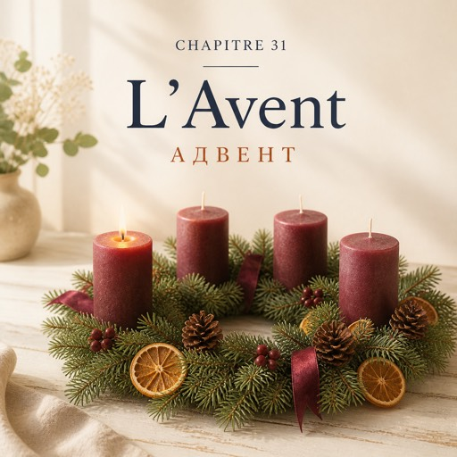

Озвучення цієї глави ще немає.
Le samedi 6 décembre — субота, 6 грудня
Le premier samedi de décembre, la rue est pleine à neuf heures et quart.
Першої суботи грудня вулиця повна вже о чверть на десяту.
Karim est monté sur l'escabeau. Il tient une guirlande de trois mètres, fil vert et petites lumières blanches.
Карім заліз на драбину. Він тримає трьохметрову гірлянду: зелений дріт і маленькі білі лампочки.
— Elle est droite ?
— Вона рівно?
— Et maintenant ?
— А тепер?
— T'inquiète. Personne ne regarde en haut.
— Та не парся. Ніхто вгору не дивиться.
Solange lève les yeux et ne dit rien. La guirlande finit droite.
Соланж підводить очі й нічого не каже. Гірлянда врешті висить рівно.
Dans l'atelier, il y a douze couronnes de l'Avent : des branches de sapin, des pommes de pin, un ruban rouge et quatre bougies.
В ательє лежать дванадцять адвентних вінків: ялинові гілки, шишки, червона стрічка і чотири свічки.
— Pourquoi quatre bougies ?
— Чому чотири свічки?
— Quatre dimanches avant Noël. Chaque dimanche, on en allume une de plus.
— Чотири неділі до Різдва. Щонеділі запалюють на одну більше.
— Et aujourd'hui, on en est où ?
— А сьогодні ми на якій?
— À une. Le premier dimanche, c'était le trente novembre.
— На одній. Перша неділя була тридцятого листопада.
Chez elle, on ne compte pas les dimanches. On monte le sapin à la fin du mois et on ne compte rien du tout.
Удома в неї неділь не рахують. Ялинку ставлять наприкінці місяця й не рахують нічого взагалі.
À onze heures, une cliente prend une couronne et demande si les bougies sont comprises.
Об одинадцятій клієнтка бере вінок і питає, чи свічки входять у ціну.
— Les quatre. Ça fait vingt-huit euros.
— Усі чотири. З вас двадцять вісім євро.
À midi, un homme entre et ne regarde pas les fleurs. Il regarde le comptoir.
Опівдні заходить чоловік і не дивиться на квіти. Він дивиться на прилавок.
— Bonjour. Je voudrais des amaryllis. Des rouges.
— Добрий день. Я хотів би амариліси. Червоні.
— Bonjour, monsieur. Je suis désolée, il n'y en a plus. La prochaine livraison, c'est mardi.
— Добрий день, мсьє. Мені прикро, їх більше немає. Наступна поставка у вівторок.
— Mardi, c'est trop tard.
— Вівторок — це запізно.
D'habitude, on propose autre chose de rouge, à peu près pareil.
Зазвичай пропонують щось інше червоне, приблизно таке саме.
Mais une amaryllis, ce n'est pas à peu près quelque chose. C'est une tige épaisse comme un doigt et une fleur large comme une main.
Але амариліс — це не «приблизно щось». Це стебло завтовшки з палець і квітка завширшки з долоню.
— On ne remplace pas une amaryllis, monsieur. On fait autre chose.
— Амариліс не замінюють, мсьє. Роблять щось інше.
— C'est pour qui ?
— Це для кого?
— Elle aime quelle couleur ?
— Який колір вона любить?
— Le rouge. Enfin... je crois. C'est elle qui achetait les fleurs.
— Червоний. Тобто... здається. Квіти завжди купувала вона.
Il dit ça sans lever la tête. Natalia ne pose pas la question suivante.
Він каже це, не підводячи голови. Наталя не ставить наступного питання.
— Alors on fait un bouquet d'hiver. Des renoncules rouges, des anémones, un peu d'eucalyptus, deux branches de sapin.
— Тоді зробимо зимовий букет. Червоні ранункулюси, анемони, трохи евкаліпта, дві ялинові гілки.
Ça ne ressemble pas à une amaryllis. Ça ressemble à décembre.
Це не схоже на амариліс. Це схоже на грудень.
— Et ça coûte combien, un bouquet d'hiver ?
— А скільки коштує зимовий букет?
— Avec ce que j'ai ce matin, je peux vous faire quelque chose autour de trente-cinq euros.
— З того, що є в мене сьогодні, я можу зробити вам щось у районі тридцяти п'яти євро.
Elle travaille vite. Sept renoncules, six anémones, l'eucalyptus en dernier.
Вона працює швидко. Сім ранункулюсів, шість анемон, евкаліпт останнім.
Karim passe derrière elle, regarde le seau et ne corrige rien.
Карім проходить у неї за спиною, дивиться на відро й нічого не виправляє.
— Vous voulez une carte ?
— Хочете листівку?
Il prend le stylo. Il reste comme ça, le stylo en l'air, plus longtemps que la carte n'est grande.
Він бере ручку. І так і лишається — ручка в повітрі — довше, ніж та листівка велика.
— Et là, on écrit quoi ?
— А тут що пишуть?
— Un mot. Un mot, ça suffit.
— Одне слово. Одного слова досить.
Il écrit et il pose le stylo. Il ne referme pas la carte. Sur le carton blanc, il y a six lettres.
Він пише й кладе ручку. Листівку не згортає. На білому картоні шість літер.
Natalia glisse la carte dans le papier sans la retourner et fait le nœud.
Наталя вкладає листівку в папір, не перевертаючи її, і зав'язує вузол.
— Merci, madame.
— Дякую, мадам.
— Bonne journée, monsieur.
— Гарного дня, мсьє.
Le soir, Solange met la dernière couronne dans la vitrine et allume la première bougie. Une sur quatre.
Увечері Соланж ставить останній вінок у вітрину й запалює першу свічку. Одну з чотирьох.
Dehors, la guirlande de Karim s'allume aussi. Elle est droite.
Надворі загорається й гірлянда Каріма. Вона рівна.